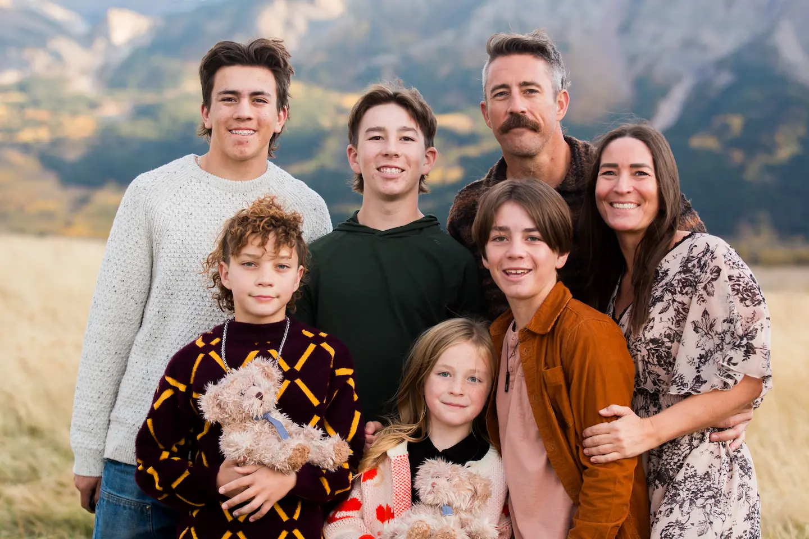

Freddy's Family
About Us
So glad you’re here! Freddy’s on Main is a family-run business by Derick and Pam Heggie and our five children. Met in 1999, married in 2004, we’ve always had a partnership marriage in every way, and running Freddy’s together has been no exception! Our story has been no stranger to loss however. First losing Pam’s brother Boyd Lacey suddenly in 2007, followed by our perfect identical twin boys Shepard and Deacon in 2013. When Pam’s dad Fred Lacey was diagnosed with terminal cancer in early 2018, passing away just before Christmas of that year,, it was the easiest decision ever to name this sentimental purchase after him in early 2020. Fred was a mainstay in our community where he ran a busy and successful construction business for decades here, building and completing in-depth renovations of many of the commercial buildings and homes in town. He is most remembered however for his easygoing and lovable personality. He had time for everyone and anyone, always. We had no idea just how much our family would feel his loss until he was gone, and being able to remember him in this way has been something we feel very grateful for. Though, we can’t say it’s good advice to make sentimental commercial business purchases, ha!
We care very deeply about restoring this 115-year old space for many other reasons as well. Mostly, We are passionate about contributing to our community through (albeit slowly) restoring the interior/exterior of the building and contributing to a better aesthetic on Main Street. Providing a historical event venue, fitness, photography studio services and 4-5 yearly recurring artisanal markets full of local vendors that were not offered in Cardston previous to our opening is something we are thrilled about. Being able to support other businesses in the community through the events that are drawn to our venue has also been one of the most fulfilling parts of the journey. Running a business as a family and on the side of full-time life (and starting this experience on day one of Covid) has been incredibly hard at times, and more than once we’ve felt perhaps it was time to list the property for sale. We are however thankful to still be here, and are very excited about the possibilities we know are endless with this unique space! We hope to even restore the original two bowling lanes (still hiding under the main floor step) on the main level!
In 2021, we began opening our space weekly for lunch to the patrons of the Moses Lake Shelter to begin fostering relationships of Truth and Reconciliation between our neighbouring communities. A year later, we added a second weekly lunch day and have high hopes for this program to grow in tandem with hopefully more community support. Thus far, we’ve funded the lunches via donations from the Town of Cardston Food Fund and both the Cardston Alberta and Cardston West Stakes of the Church of Jesus Christ of Latter Day Saints. This program has come precariously close more than once to ending, as the 2-3 of us who run the lunches are often maxed in our abilities to meet all the needs of the program. If you or anyone you know in any way could support us with our Truth and Reconciliation desires, please email freddysdropin@gmail.com. We’d be forever grateful to not only continue this program, but to expand it.
Your contributions and interest in our space mean everything to us, we are thankful you see the value in spending time amidst history. We both have full-time jobs, so this building has been a labour of love as we try to balance it amongst our many other responsibilities. Freddy’s has such a unique feeling and aesthetic that can only be accrued through decades of stories it’s already told. Along with its high-maintenance cost/age does come a few literal extra steps and rough edges though, thank you for your understanding as we continue to make plans to provide the best of both worlds. Updating this wonderful space into a successful, smooth experience for all would not be possible without your support!